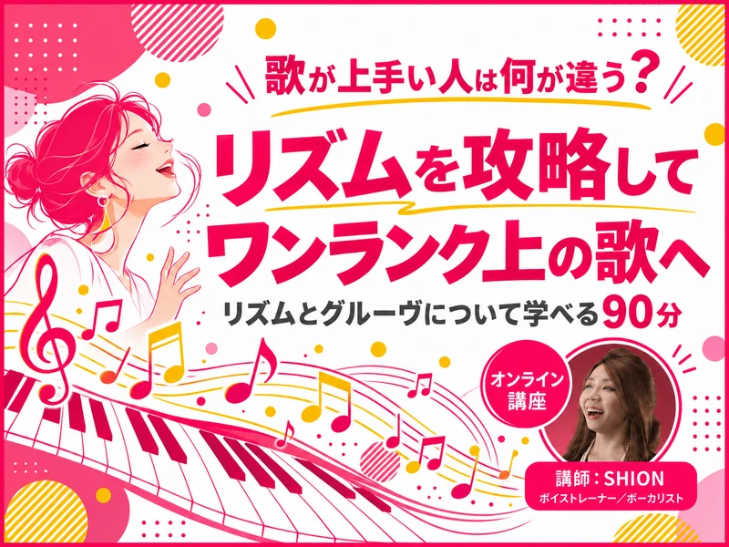

リズム・グルーヴ編
申込受付中
歌が上手い人は何が違う？
リズムを攻略してワンランク上の歌へ
リズムとグルーヴについて学べる90分
- 日時
- 2026年11月1日（日） 18:30〜20:00日本時間・90分
- 形式
- オンライン（Google Meet）
- 料金
- 3,000円（税込）追加費用はかかりません
- 定員
- 8名
- 資料
- 終了後にPDFでお渡しします
- 参加URL
- 開催前日までに、ストアカのメッセージでご案内します
- 受付状況
- 申込受付中お申し込みはストアカで受け付けています
当日扱う内容
- 同じフレーズでもノリが変わることを、聴き比べて確かめる
- 体をゆらしたり、手拍子や膝打ちをしたりしてビートを感じる
- 8ビート、16ビート、シャッフルなどの違いに触れる
- アクセント、音の長さや切り方、歌うタイミングを知る
- 好きな歌の気持ちよさや、歌い手の表現に気づく聴き方を学ぶ
参加のしかた
- 初心者の方も歓迎です
- カメラオフ・聴講のみでも参加できます
- 声を出せる環境でのご参加をおすすめします
- イヤホンの使用をおすすめします
- 資料を見ながら進めるため、PC・タブレットが便利です